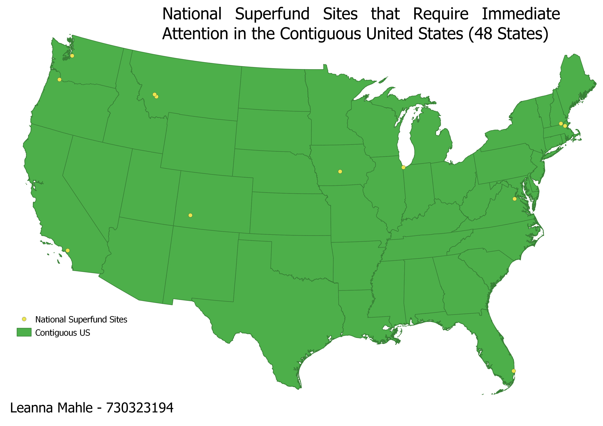
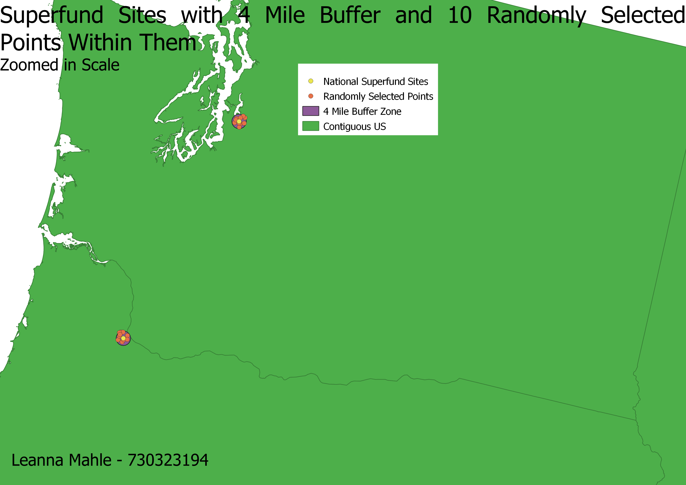

Homework 10: National Superfund Sites Targeted for Immediate, Intense Action in the Contiguous United States
Leanna Mahle - 730323194
The EPA recommends a four mile buffer between Superfund sites and human interaction, but is that sufficient when taking into consideration the growing population within the US? This map shows where potential randomized sample sites could be taken within this four mile buffer to ensure safety. It would guarantee a that people are not unnecessarily exposed to pollutants when there is a chance to keep them safe.


Data used for this project
Cleaned CSV Dataset
Link to Country Shapefile
Link to Website for CSV Data